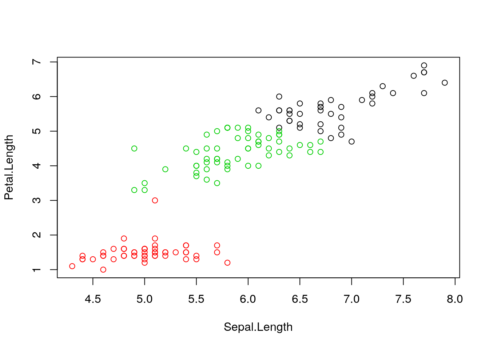
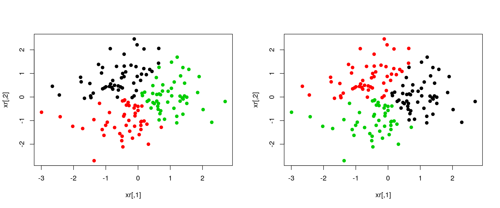
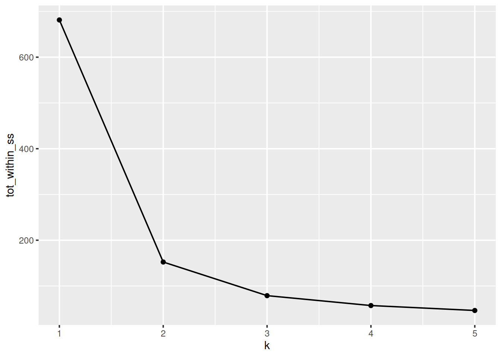
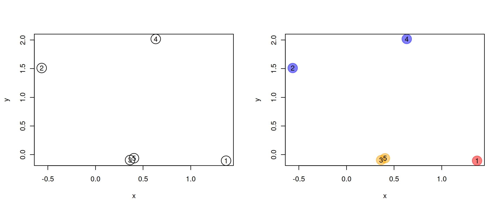
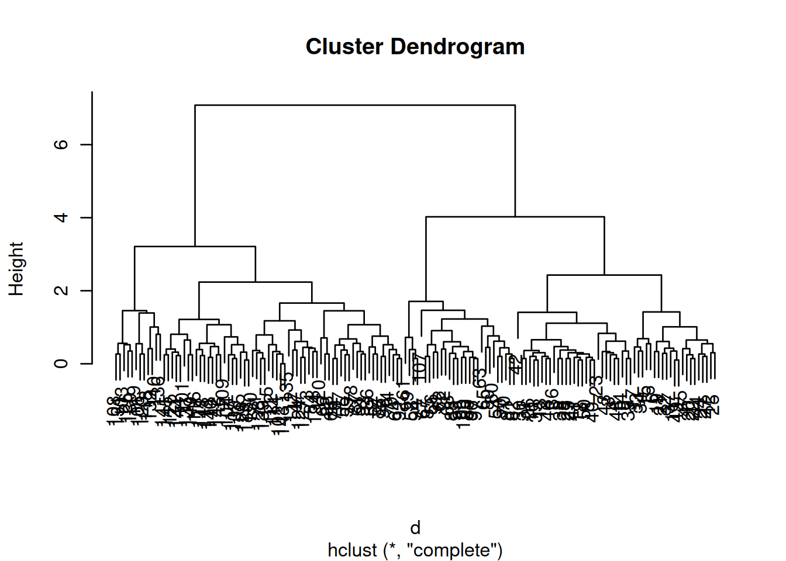
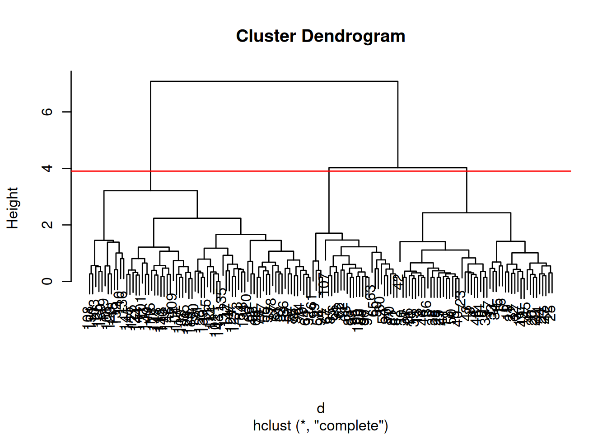

Chapter 8 Unsupervised learning
8.1 Introduction
In unsupervised learning (UML), no labels are provided, and the learning algorithm focuses solely on detecting structure in unlabelled input data. One generally differentiates between
- Clustering, where the goal is to find homogeneous subgroups within the data; the grouping is based on similiarities (or distance) between observations. The result of a clustering algorithm is to group the observations (features) into distinct (generally non-overlapping) groups. These groups are, even of imperfect (i.e. ignoring intermediate states) are often very useful in interpretation and assessment of the data.
There is however one important caveat with clustering: clustering algorithms will always find clusters, even when none exists12 See the additional exercise for an illustration of this risk.. It is thus essential to critically assess and validate (for example using existing domain knowledge) the results of any clustering algorithm.
- Dimensionality reduction (see chapter 9), where the goal is to summarise the data in a reduced number of dimensations, i.e. using a reduced number of (newly computer) variables. A typical example in omics is to summarise (and visualise) the relation between samples along two dimensions (which can easily be plotted) even if the data consists of tens of thousands of dimensions ( genes). Dimensionality reduction is often used to facilitate visualisation of the data, as well as a pre-processing method before supervised learning.
UML presents specific challenges and benefits:
- Challenge: there is no single goal in UML
- Benefit: there is generally much more unlabelled data available than labelled data.
In this chapter we will:
- Learn how to use a widely used non-parametric clustering algorithms k-means.
- Learn how to use reucrsive clustering approaches known as hierarchical clustering.
- Observe the clustering parameters and distance metrics influence of outputs of these algorithms.
8.2 k-means clustering
The k-means clustering algorithms aims at partitioning n observations into a fixed number of k clusters. The algorithm will find homogeneous clusters.
In R, we use
stats::kmeans(x, centers = 3, nstart = 10)where
-
xis a numeric data matrix -
centersis the pre-defined number of clusters - the k-means algorithm has a random component and can be repeated
nstarttimes to improve the returned model
► Question
Challenge:
- To learn about k-means, let’s use the
irisdataset with the sepal and petal length variables only (to facilitate visualisation). Create such a data matrix and name itx
- Run the k-means algorithm on the newly generated data
x, save the results in a new variablecl, and explore its output when printed.
- The actual results of the algorithms, i.e. the cluster membership can be accessed in the
clusterselement of the clustering result output. Use it to colour the inferred clusters to generate a figure like that shown below.
Figure 8.1: k-means algorithm on sepal and petal lengths

i <- grep("Length", names(iris))
x <- iris[, i]
cl <- kmeans(x, 3, nstart = 10)
plot(x, col = cl$cluster)8.2.1 How does k-means work
Initialisation: randomly assign class membership
set.seed(12)
init <- sample(3, nrow(x), replace = TRUE)
plot(x, col = init)Figure 8.2: k-means random intialisation

Iteration:
- Calculate the centre of each subgroup as the average position of all observations is that subgroup.
- Each observation is then assigned to the group of its nearest centre.
It’s also possible to stop the algorithm after a certain number of iterations, or once the centres move less than a certain distance.
par(mfrow = c(1, 2))
plot(x, col = init)
centres <- sapply(1:3, function(i) colMeans(x[init == i, ], ))
centres <- t(centres)
points(centres[, 1], centres[, 2], pch = 19, col = 1:3)
tmp <- dist(rbind(centres, x))
tmp <- as.matrix(tmp)[, 1:3]
ki <- apply(tmp, 1, which.min)
ki <- ki[-(1:3)]
plot(x, col = ki)
points(centres[, 1], centres[, 2], pch = 19, col = 1:3)Figure 8.3: k-means iteration: calculate centers (left) and assign new cluster membership (right)

Termination: Repeat iteration until no point changes its cluster membership.

k-means convergence (credit Wikipedia)
8.2.2 Model selection
Due to the random initialisation, one can obtain different clustering results. When k-means is run multiple times, the best outcome, i.e. the one that generates the smallest total within cluster sum of squares (SS), is selected. The total within SS is calculated as:
For each cluster results:
- for each observation, determine the squared euclidean distance from observation to centre of cluster
- sum all distances
Note that this is a local minimum; there is no guarantee to obtain a global minimum.
Challenge:
Repeat k-means on our
xdata multiple times, setting the number of iterations to 1 or greater and check whether you repeatedly obtain the same results. Try the same with random data of identical dimensions.
cl1 <- kmeans(x, centers = 3, nstart = 10)
cl2 <- kmeans(x, centers = 3, nstart = 10)
table(cl1$cluster, cl2$cluster)##
## 1 2 3
## 1 0 41 0
## 2 51 0 0
## 3 0 0 58cl1 <- kmeans(x, centers = 3, nstart = 1)
cl2 <- kmeans(x, centers = 3, nstart = 1)
table(cl1$cluster, cl2$cluster)##
## 1 2 3
## 1 41 0 0
## 2 0 0 58
## 3 0 51 0set.seed(42)
xr <- matrix(rnorm(prod(dim(x))), ncol = ncol(x))
cl1 <- kmeans(xr, centers = 3, nstart = 1)
cl2 <- kmeans(xr, centers = 3, nstart = 1)
table(cl1$cluster, cl2$cluster)##
## 1 2 3
## 1 0 52 0
## 2 0 0 46
## 3 52 0 0diffres <- cl1$cluster != cl2$cluster
par(mfrow = c(1, 2))
plot(xr, col = cl1$cluster, pch = ifelse(diffres, 19, 1))
plot(xr, col = cl2$cluster, pch = ifelse(diffres, 19, 1))Figure 8.4: Different k-means results on the same (random) data
8.2.3 How to determine the number of clusters
- Run k-means with
k=1,k=2, …,k=n - Record total within SS for each value of k.
- Choose k at the elbow position, as illustrated below.

Challenge
Calculate the total within sum of squares for k from 1 to 5 for our
xtest data, and reproduce the figure above.
ks <- 1:5
tot_within_ss <- sapply(ks, function(k) {
cl <- kmeans(x, k, nstart = 10)
cl$tot.withinss
})
plot(ks, tot_within_ss, type = "b")
8.3 Hierarchical clustering
8.3.1 How does hierarchical clustering work
Initialisation: Starts by assigning each of the n points its own cluster
Iteration
- Find the two nearest clusters, and join them together, leading to n-1 clusters
- Continue the cluster merging process until all are grouped into a single cluster
Termination: All observations are grouped within a single cluster.
Figure 8.5: Hierarchical clustering: initialisation (left) and colour-coded results after iteration (right).
The results of hierarchical clustering are typically visualised along a dendrogram, where the distance between the clusters is proportional to the branch lengths.
Figure 8.6: Visualisation of the hierarchical clustering results on a dendrogram

In R:
- Calculate the distance using
dist, typically the Euclidean distance. - Hierarchical clustering on this distance matrix using
hclust
Challenge
Apply hierarchical clustering on the
irisdata and generate a dendrogram using the dedicatedplotmethod.
d <- dist(iris[, 1:4])
hcl <- hclust(d)
hcl##
## Call:
## hclust(d = d)
##
## Cluster method : complete
## Distance : euclidean
## Number of objects: 150plot(hcl)
8.3.2 Defining clusters
After producing the hierarchical clustering result, we need to cut the tree (dendrogram) at a specific height to defined the clusters. For example, on our test dataset above, we could decide to cut it at a distance around 1.5, with would produce 2 clusters.
Figure 8.7: Cutting the dendrogram at height 1.5.

In R we can us the cutree function to
- cut the tree at a specific height:
cutree(hcl, h = 1.5) - cut the tree to get a certain number of clusters:
cutree(hcl, k = 2)
Challenge
- Cut the iris hierarchical clustering result at a height to obtain 3 clusters by setting
h.- Cut the iris hierarchical clustering result at a height to obtain 3 clusters by setting directly
k, and verify that both provide the same results.
plot(hcl)
abline(h = 3.9, col = "red")
cutree(hcl, k = 3)## [1] 1 1 1 1 1 1 1 1 1 1 1 1 1 1 1 1 1 1 1 1 1 1 1 1 1 1 1 1 1 1 1 1 1 1 1
## [36] 1 1 1 1 1 1 1 1 1 1 1 1 1 1 1 2 2 2 3 2 3 2 3 2 3 3 3 3 2 3 2 3 3 2 3
## [71] 2 3 2 2 2 2 2 2 2 3 3 3 3 2 3 2 2 2 3 3 3 2 3 3 3 3 3 2 3 3 2 2 2 2 2
## [106] 2 3 2 2 2 2 2 2 2 2 2 2 2 2 2 2 2 2 2 2 2 2 2 2 2 2 2 2 2 2 2 2 2 2 2
## [141] 2 2 2 2 2 2 2 2 2 2cutree(hcl, h = 3.9)## [1] 1 1 1 1 1 1 1 1 1 1 1 1 1 1 1 1 1 1 1 1 1 1 1 1 1 1 1 1 1 1 1 1 1 1 1
## [36] 1 1 1 1 1 1 1 1 1 1 1 1 1 1 1 2 2 2 3 2 3 2 3 2 3 3 3 3 2 3 2 3 3 2 3
## [71] 2 3 2 2 2 2 2 2 2 3 3 3 3 2 3 2 2 2 3 3 3 2 3 3 3 3 3 2 3 3 2 2 2 2 2
## [106] 2 3 2 2 2 2 2 2 2 2 2 2 2 2 2 2 2 2 2 2 2 2 2 2 2 2 2 2 2 2 2 2 2 2 2
## [141] 2 2 2 2 2 2 2 2 2 2identical(cutree(hcl, k = 3), cutree(hcl, h = 3.9))## [1] TRUEChallenge
Using the same value
k = 3, verify if k-means and hierarchical clustering produce the same results on theirisdata.Which one, if any, is correct?
km <- kmeans(iris[, 1:4], centers = 3, nstart = 10)
hcl <- hclust(dist(iris[, 1:4]))
table(km$cluster, cutree(hcl, k = 3))##
## 1 2 3
## 1 0 34 28
## 2 0 38 0
## 3 50 0 0par(mfrow = c(1, 2))
plot(iris$Petal.Length, iris$Sepal.Length, col = km$cluster, main = "k-means")
plot(iris$Petal.Length, iris$Sepal.Length, col = cutree(hcl, k = 3), main = "Hierarchical clustering")## Checking with the labels provided with the iris data
table(iris$Species, km$cluster)##
## 1 2 3
## setosa 0 0 50
## versicolor 48 2 0
## virginica 14 36 0table(iris$Species, cutree(hcl, k = 3))##
## 1 2 3
## setosa 50 0 0
## versicolor 0 23 27
## virginica 0 49 18.4 Pre-processing
Many of the machine learning methods that are regularly used are sensitive to difference scales. This applies to unsupervised methods as well as supervised methods, as we will see in the next chapter.
A typical way to pre-process the data prior to learning is to scale the data, or apply principal component analysis (next section). Scaling assures that all data columns have a mean of 0 and standard deviation of 1.
In R, scaling is done with the scale function.
Challenge
Using the
mtcarsdata as an example, verify that the variables are of different scales, then scale the data. To observe the effect different scales, compare the hierarchical clusters obtained on the original and scaled data.
colMeans(mtcars)## mpg cyl disp hp drat wt
## 20.090625 6.187500 230.721875 146.687500 3.596563 3.217250
## qsec vs am gear carb
## 17.848750 0.437500 0.406250 3.687500 2.812500hcl1 <- hclust(dist(mtcars))
hcl2 <- hclust(dist(scale(mtcars)))
par(mfrow = c(1, 2))
plot(hcl1, main = "original data")
plot(hcl2, main = "scaled data")
8.5 Additional exercises
► Question
An important caveat of clustering is that a clustering algorithm such as k-means will always find clusters, even when there is none. Illustrate this by creating a 2-dimensional random data by generation a matrix of 100 rows and 2 columns from N(0, 1) and searching for 2, 3, 4, 5 and 6 cluster. Visualise these results and assess whether they look convincing or not.
Page built: 2019-11-09